YouTube広告 モックアップ動画 v1
Lovers 様（活動名：南 健／担当：川上 恵以）
📋 案件基本情報（ヒアリング確定）
リラクゼーション
悩み解決ストーリー型
2-3秒/カット
サラリーマン＋私服勤務
スーツ／私服男性
🎬 モックアップ動画 — 施術中心 統合版（30秒）
承認された3フック（B/C/E）＋ 先生目線POV を冒頭12秒に集約。同業バズ動画（Masotera/oru）パターンに合わせて施術シーンを7カットに増量。共感・店舗シーンを削除して、施術の見せ場で勝負する構成に。
15カットのサムネ一覧（施術9カット強化版）
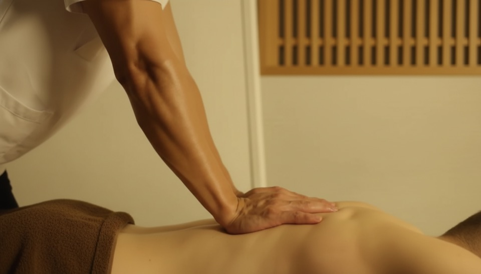
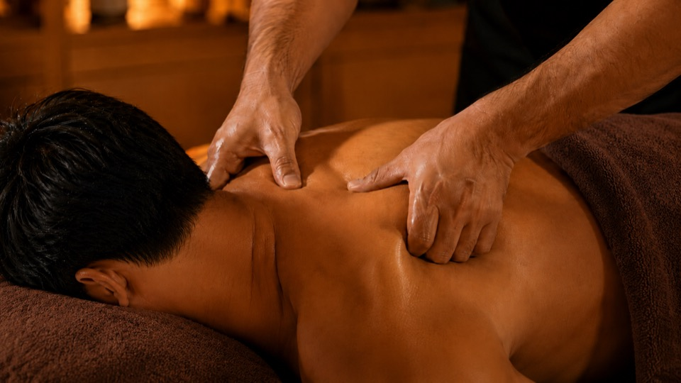
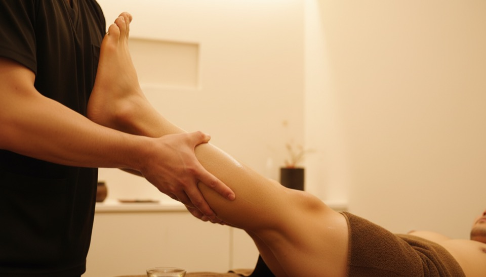
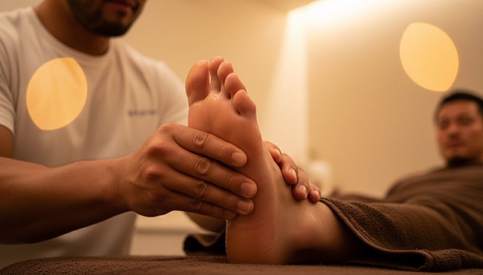


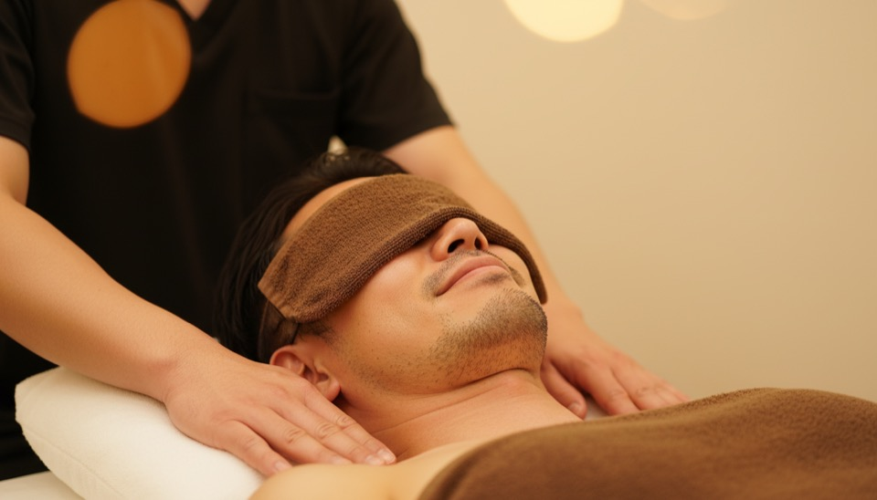
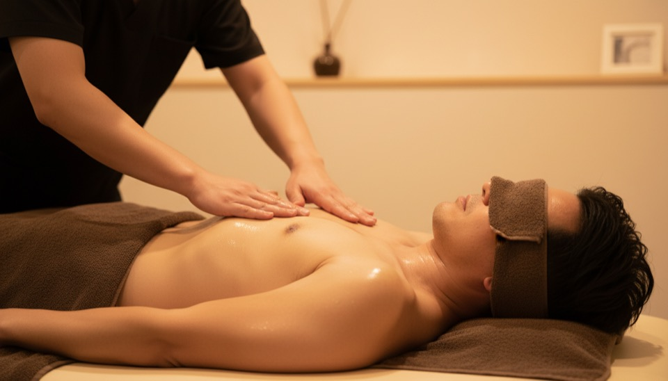

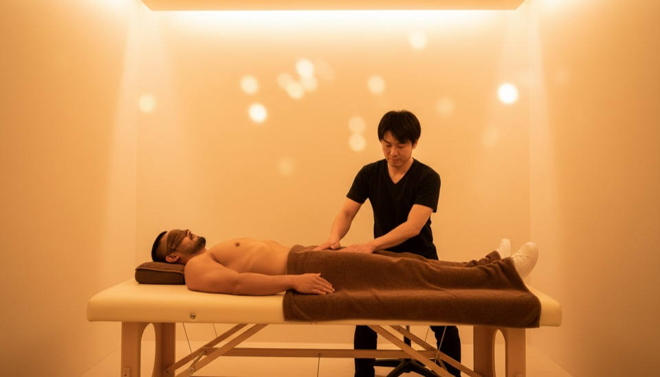
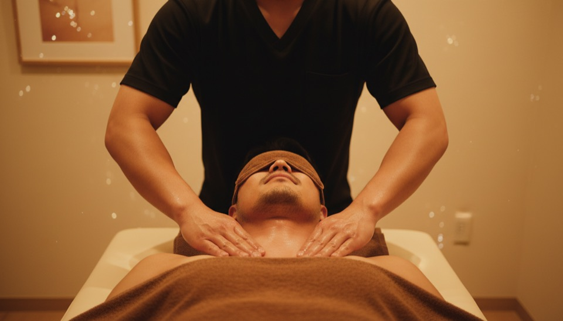
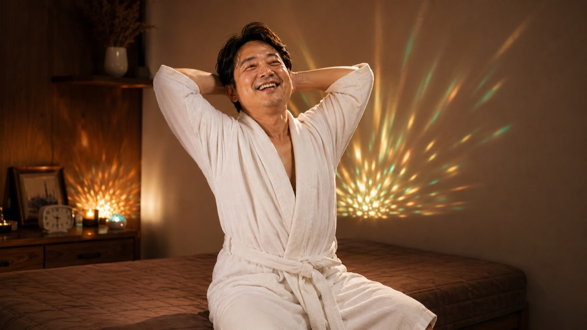


🎯 フック候補（冒頭3秒）バリエーション6パターン
冒頭3秒で「スクロールを止める」インパクトのある施術カットを6パターン用意。A/Bテストでどれがクリック率高いかを判定可能。現状は1.png（背中圧マクロ）を採用中ですが、下記から差し替えできます。
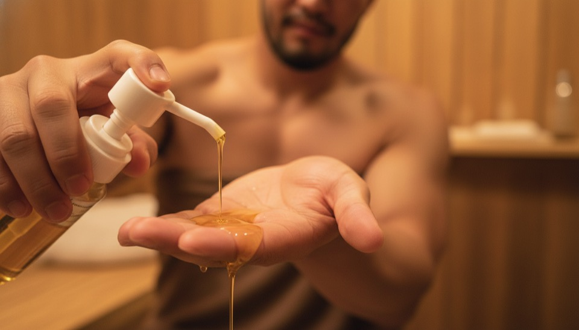
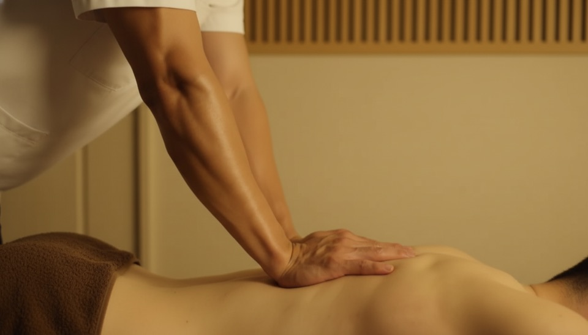
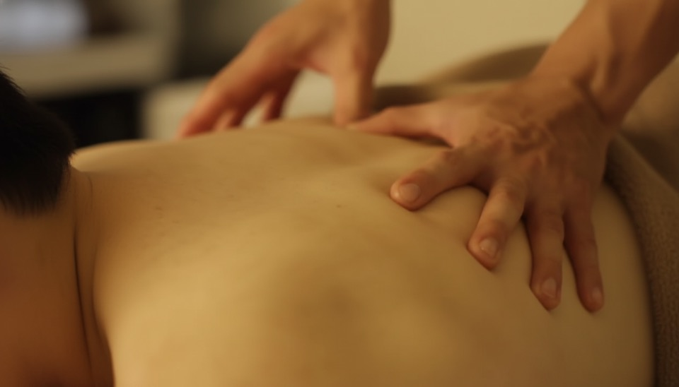
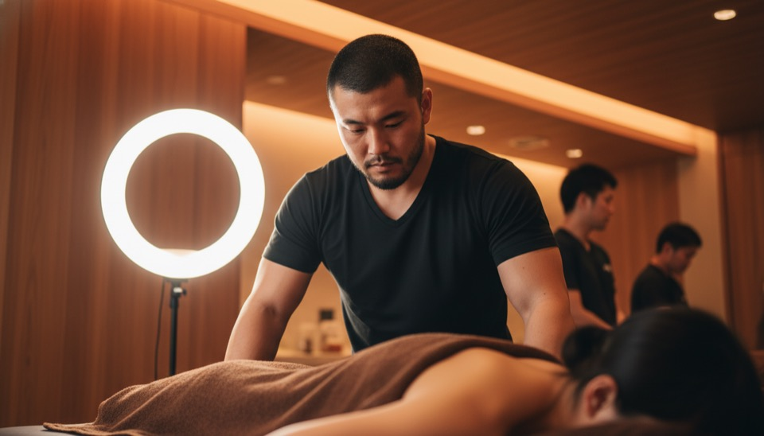
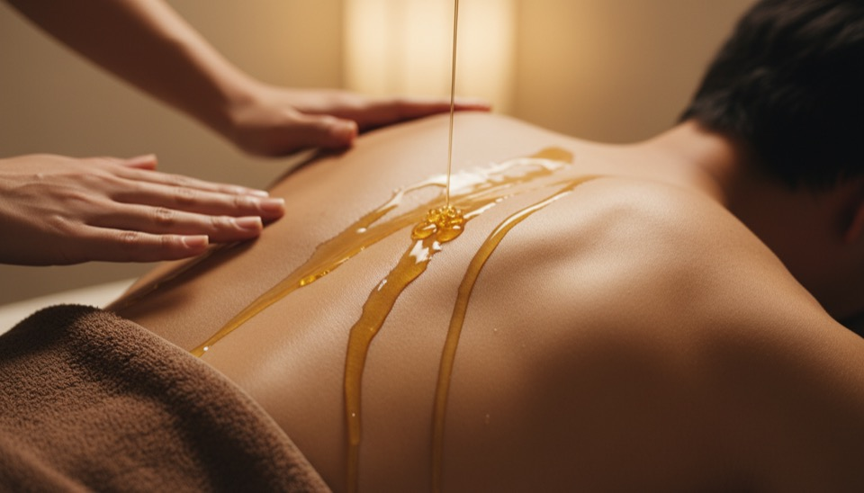
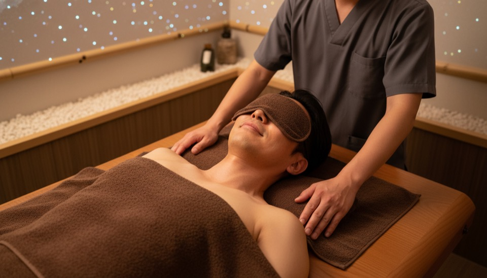
🤖 GPT Image 2.0 統一プロンプト集（全10カット）
登場人物・部屋・タオルを完全統一するために、全プロンプトに同じキャラ説明＋同じ部屋説明＋同じタオル色を埋め込み済み。各プロンプトに3つの参考写真（南氏・客モデル・部屋）を添付してください。
• 客の顔だけ見えるシーン（S1〜S3 手だけ系, S7 USPキメ, S10 客顔 など） → 客モデル参考写真のみ添付（施術者写真は添付しない）
• 施術者の顔だけ見えるシーン（S15 CTA など） → 施術者参考写真のみ添付
• 両方の顔が見えるシーン → 両方添付するが、プロンプトで「左の人=施術者、右の人=客」と明示
→ 両方添付すると AI が混ぜて顔がスワップしてしまうので、必要最小限の参照だけにする
📋 共通ブロック（全プロンプト末尾に貼り付け）
CHARACTER UNIFICATION (apply across ALL scenes — STRICT FACE CONSISTENCY): - THERAPIST FACE: Use the EXACT FACE from the attached therapist reference photo. PRESERVE ALL FACIAL FEATURES — same nose shape, same eye shape, same mouth, same jawline, same hairstyle (short black hair, slight short beard). Athletic Japanese man in his late 30s. He wears a clean BLACK V-NECK T-SHIRT and black pants. Masculine male body, NOT feminine. - CLIENT FACE: Use the EXACT FACE from the attached client reference photo. PRESERVE ALL FACIAL FEATURES — same nose shape, same eye shape, same mouth, same brows, same hairstyle (SHORT DARK HAIR, slight stubble). Same Japanese man in his late 40s with soft features and slight soft belly across every scene. - DO NOT change face identity between scenes. The same two people appear in every massage scene. NO different person, NO different age, NO different hairstyle. - If only one reference photo is attached, derive both characters' features carefully to match the visible person. ROOM UNIFICATION (same room across ALL scenes — MINIMAL CLEAN AESTHETIC): - Walls: CLEAN CREAM/BEIGE warm wall (NOT dark wood, NOT white clinical, NOT cluttered) Color tones: #d4b896 to #a08868 (warm cream beige) - Background: MINIMAL, mostly out of focus with soft warm bokeh, NOT ring lamp visible, NOT oil bottles visible, NOT decorations cluttering the frame - Atmosphere: Like a high-end Japanese spa with clean simple walls — premium minimalist aesthetic - Lighting: Soft golden amber from above (single key light), warm 2700K, indirect - Table: Wooden massage table with neutral sheets - Towel: BROWN towel on client - IMPORTANT: Background should look like the approved Hook B/C reference photos (light cream walls with warm amber lighting, minimal decor) TOWEL UNIFICATION (always BROWN): - All towels covering the client are BROWN/CHOCOLATE COLOR (NOT white, NOT pastel) - The folded EYE MASK is BROWN - The body wrap is BROWN - NO white towels visible on the client's body SAFETY: - MEN-ONLY salon, both people are clearly JAPANESE ADULT MEN - NO WOMEN, NO long-haired figures, NO androgynous appearance - Professional therapeutic massage, NOT sensual - Body exposure: neck/shoulders/back/arms only with brown towel covering modesty - YouTube ad compliant, no Chinese/Korean characters, no text, no watermarks STYLE: - Photorealistic, cinematic Japanese ad aesthetic - 16:9 LANDSCAPE (NOT portrait, NOT square) - Ultra-detailed, warm amber spa lighting, shallow depth of field - --ar 16:9
01｜0-3s｜🎯 フックB — 前腕の力強い圧（解剖学正確版）

Cinematic close-up of a male massage therapist's strong forearm and palm pressing deep into a Japanese male client's bare upper back. ANATOMICAL CORRECTNESS: - The therapist's ONE arm reaches in from the TOP/SIDE of frame, naturally connected to a partially visible BLACK V-NECK shoulder/torso at the edge of frame (NOT floating disembodied). - The forearm shows visible muscle tension, masculine, oiled, slight body hair. - The client lies face-down, head turned to one side resting in a face cradle, head/neck/shoulders all anatomically connected. - Brown towel covers lower back. DO NOT: floating arms with no body, head emerging from impossible angles, extra limbs, anatomical breaks. LIGHTING: warm amber side-light, dramatic shadows, circular ring lamp glow in soft-focus background. Wooden warm interior. Cinematic close-up, 85mm lens, very shallow DoF, photorealistic. [APPLY COMMON BLOCK] --ar 16:9
02｜3-6s｜🎯 フックC — 両手で背中圧（解剖学正確版・客顔のみ）
📎 添付：客モデル写真のみ（施術者写真は添付しない・顔が混ざるため）

Cinematic close-up of a Japanese male massage therapist working on a Japanese male client's bare upper back. CAMERA POSITION: viewing the scene from the side and slightly above the massage table. ANATOMICAL CORRECTNESS REQUIRED: - The therapist STANDS BEHIND the client's head (above the head of the table). His torso (in BLACK V-NECK T-SHIRT) is partially visible at the top of frame to ANCHOR the arms naturally. NOT floating arms. - His TWO arms reach down/forward toward the client's back, both arms clearly attached to the same shoulders/torso. Forearms are masculine, slight body hair, oiled. - Both thumbs press into the trapezius muscle on either side of the spine, creating soft dimples. - The CLIENT lies FACE-DOWN with head turned to ONE side resting on a face cradle pillow. His head/neck connects naturally to his shoulders - no anatomical disconnect. - Brown towel covers the client's lower back/waist. DO NOT: floating disembodied arms, multiple unattached limbs, head emerging from impossible angles, two heads, hands from different bodies. LIGHTING: warm amber, side light, circular wall lamp glowing in soft-focus background. Wooden warm interior. Cinematic 50mm lens, shallow DoF, photorealistic. [APPLY COMMON BLOCK] --ar 16:9
03｜6-9s｜🎯 フックE — オイル塗布（解剖学＋顔一貫性版・客顔のみ）
📎 添付：客モデル写真のみ（施術者写真は添付しない・顔が混ざるため）

Cinematic close-up of a male massage therapist's BOTH hands (covered in glistening golden oil) smoothly gliding across the Japanese male client's bare upper back/shoulders in flowing massage strokes. FACE IDENTITY (CRITICAL — STRICT): - The CLIENT's face visible in frame is the ONLY face shown. It MUST EXACTLY MATCH the attached client reference photo (the man in the white/checkered shirt). PRESERVE all his unique features. - DO NOT apply any facial features from a different reference. ONLY ONE reference photo is attached intentionally — use it as the client. - The THERAPIST's face must NOT be visible (only his torso/arms enter from the top of frame). His face is intentionally cropped out. - Do not invent a new face. Do not blend faces. Do not use beard or short military hair unless they appear in the attached reference. ANATOMICAL CORRECTNESS: - Both arms reach in from the TOP of frame, naturally connected to a partially visible BLACK V-NECK chest/shoulders at the edge of frame (NOT floating disembodied). - TWO arms only, both attached to the same body, with anatomical continuity. - Oil already on hands (NOT pouring from a bottle), creating warm shine on the skin. - The client lies face-down, head turned to one side in a face cradle, head/neck/shoulders all anatomically connected. - Brown towel covers lower back. DO NOT: floating disembodied arms, three or more arms, head emerging from impossible angles, hands from different bodies, anatomical breaks, different face from reference. LIGHTING: warm amber, oil sheen catchlights, wooden interior soft-focus. Macro photography, 90mm lens, shallow DoF, ultra-detailed skin and oil texture, photorealistic. [APPLY COMMON BLOCK] --ar 16:9
04｜9-12s｜📐 先生引のシーン（全景）
WIDE establishing shot showing the FULL massage table, the therapist standing beside it (in BLACK V-NECK T-SHIRT, working on the client's back), and the client lying face-down on the wooden table with BROWN TOWEL covering lower body. The entire warm wooden spa room visible: wooden walls, circular ring lamp, LED star projection on wall, wooden shelves with brown oil bottles. Architectural-style wide shot. Warm amber 2700K lighting. [APPLY COMMON BLOCK] --ar 16:9
05｜12-15s｜👁 先生目線POV
POV first-person view: the viewer IS the therapist looking down at his own hands working on the client's bare back. Therapist's BLACK V-NECK T-shirt visible at top of frame, his oiled male forearms (with slight body hair, muscular, Japanese man's arms) extend into frame. Client lies face-down on wooden table (SHORT DARK HAIR visible, masculine neck and shoulders). BROWN TOWEL covers lower back. Warm wooden room around. Circular ring lamp visible in periphery. [APPLY COMMON BLOCK] --ar 16:9
06｜15-18s｜🔥 客の顔・アイマスク（寄り）
Close-up of the client's face during massage. He lies face-up on the wooden table, head on a soft pillow. A folded BROWN TOWEL rests over his eyes/forehead as an eye mask (NOT white, NOT black - BROWN). His face has clearly masculine features: square jaw, slight stubble on chin, masculine eyebrows, SHORT DARK HAIR. Lips show a slight peaceful relief expression. Therapist's hand (in black v-neck sleeve - clearly male arm with slight body hair) rests on his shoulder. Warm amber lighting, circular ring lamp glow, LED stars in soft focus behind. [APPLY COMMON BLOCK] --ar 16:9
07｜18-21s｜🦵 足の寄り（マクロ）
EXTREME CLOSE-UP MACRO of the therapist's hands working on the client's calf/lower leg. Therapist's male Japanese hands gripping and kneading the calf muscle with oil glistening on the skin. Only the calf and the therapist's hands/forearms visible. The leg is a JAPANESE MALE leg (slight body hair, muscular calf, NOT smooth feminine). Small clear glass oil bowl visible at edge of frame. BROWN TOWEL partially visible covering upper thigh. Warm amber side-lighting catching the oil sheen. Macro lens, 90mm, very shallow DoF, ultra-detailed skin texture. Warm wooden background out of focus. [APPLY COMMON BLOCK] --ar 16:9
08｜21-24s｜施術後・白ガウン笑顔
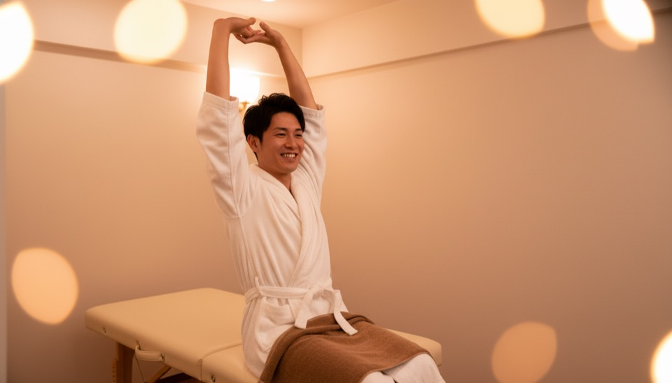
The same client (same face as reference) now sitting up on the edge of the wooden massage table after the session, wearing a clean WHITE SPA ROBE. He stretches both arms behind his head with a wide natural smile, eyes bright. Behind him: same wooden wall with circular ring lamp and LED star projection glowing softly - same room as other scenes. Brown towel still visible folded on table beside him. Warm amber spa lighting. Mid-shot composition. [APPLY COMMON BLOCK] --ar 16:9
09｜24-27s｜活力復帰（スーツ颯爽）

The same Japanese man (same face as reference, late 40s) now wearing a dark gray business suit with a navy tie, walking confidently through a modern Japanese train station or airport terminal in early morning light. He carries a small black business bag in his right hand. Posture upright, chin lifted slightly, determined and refreshed expression. Bright natural daylight streams through large glass windows. Other passengers blurred in background. Warm morning sunlight from the left, golden hour glow. Style: ultra-realistic, cinematic Japanese commercial style, 35mm lens. [APPLY COMMON BLOCK except room — this scene is OUTSIDE the salon] --ar 16:9
10｜27-30s｜CTA統合（顔＋店舗情報＋LINE QR）
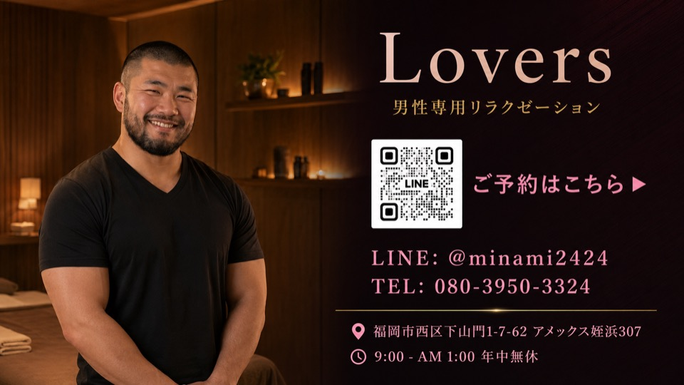
A 16:9 LANDSCAPE CTA composite. LEFT HALF (45%): Warm portrait of the male therapist (same face as reference - athletic Japanese man, short hair, slight beard, BLACK V-NECK T-SHIRT, friendly smile) standing in a warm-lit wooden massage room. RIGHT HALF (55%): Clean info panel with deep amber/wood gradient background (#2a1820 to #1a1018). Top: elegant serif logotype "Lovers" in soft pink-cream. Below: small gold uppercase "男性専用リラクゼーション". Middle: clean square white LINE QR code placeholder + adjacent text "📱 ご予約はこちら ▶" with "LINE: @minami2424" and "TEL: 080-3950-3324" below. Bottom (gold separator): "📍 福岡市西区下山門1-7-62 アメックス姪浜307" / "🕐 9:00 - AM 1:00 年中無休". Style: ultra-clean, premium, masculine, dignified. [APPLY COMMON BLOCK] --ar 16:9
- 各プロンプトの[APPLY COMMON BLOCK]を共通ブロックの内容に置換してから生成
- 参考写真3枚を必ず添付：①南氏プールサイド（施術者顔）／②客モデル チェック男性（客顔）／③店舗ベッド（部屋・LED）
- 「NO white background, warm wooden walls, brown towel」を強く指示
- 9.png（スーツ）と10.png（CTA合成）は店舗内ではないので例外
📐 構成（施術中心 統合版）
同業種バズ動画（Masotera 29万再生／oru）を完全踏襲し、施術シーン7カット＋After2＋CTA1の構成に。冒頭12秒は3フック（B/C/E）＋POVの施術ラッシュでスクロールを止める。
| # | 秒数 | 役割 | シーン内容 | テロップ／ナレ |
|---|---|---|---|---|
| 1 | 0-3s | 🎯 フック施術B | 施術師の前腕の力強い圧・Masoteraスタイル | 📝 男のための、本気の癒し。 |
| 2 | 3-6s | 🎯 フック施術C | 両手で背中圧・寄りのマクロ | 🔊 （施術音／BGMのみ） |
| 3 | 6-9s | 🎯 フック施術E | オイル塗布・両手で背中をなぞる流れ | 🔊 （オイルの音・呼吸音） |
| 4 | 9-12s | 👁 先生目線POV | 施術者の一人称視点・自分の手が客の背中を施術するアングル | 🔊 静かに落ち着ける時間と、丁寧なマッサージ。 |
| 5 | 12-15s | 🔥 USPキメ（客の表情） | 客の顔・茶色アイマスク・腹リンパマッサージ（リラックス瞬間） | 🔊 男性同士だからこそ、通じ合える感覚。 |
| 6 | 15-18s | 施術（人柄） | 南様が笑顔で客の上半身を施術・リングランプ・木目スパ | 🔊 敏感になりやすいポイントを、じっくり。 |
| 7 | 18-21s | 施術（脚マッサージ） | 脚マッサージ・オイル小皿・茶色タオル | 🔊 （施術音／BGMのみ） |
| 8 | 21-24s | After①（施術後） | 客が白ガウンで満足の笑顔・両手を頭の後ろに・LED星空 | 📝 勧誘も、押し売りも、ありません。 |
| 9 | 24-27s | After②（活力復帰） | スーツで颯爽と空港・新幹線ホームを歩く | 📝 明日から、また戦える。 |
| 10 | 27-30s | ⑤CTA（統合） | 南様の笑顔ポートレート＋Lovers ロゴ＋LINE QR＋住所／電話／営業時間 | 📝 ご予約はこちら ▶ ／ LINE: @minami2424 |
🎙 台本（30秒・施術中心構成版）
シーン別 ナレーション＆テロップ（時間配置付き）
| 秒数 | カット | ナレ／テロップ |
|---|---|---|
| 0-2.5s | 🎯 フックB（前腕の圧） | 📝 男のための、本気の癒し。 |
| 2.5-5s | 🎯 フックC（両手で背中圧） | 🔊 その疲れ、まだ引きずってませんか。 |
| 5-7.5s | 🎯 フックE（オイル塗布） | 🔊 抜けない、肩の重さ。 |
| 7.5-10s | 🚊 共感①（電車・スーツ疲労） | 🔊 誰にも言えない、男の疲労。 |
| 10-12.5s | 🌙 共感②（私服・夜帰り道） | 🔊 日常の疲れを、抜け出したい。 |
| 12.5-15s | 🏢 解決提示（Lovers店舗） | 📝 男性専用 リラクゼーション Lovers 🔊 男性専用リラクゼーション、Lovers。 |
| 15-17.5s | 🔥 USPキメ（客の顔・アイマスク） | 🔊 男性同士だからこそ、わかる感覚。 |
| 17.5-20s | 施術①（仰向け・お腹リンパ） | 🔊 静かに落ち着ける時間と、丁寧なマッサージ。 |
| 20-22.5s | 施術②（足裏マッサージ） | 🔊 凝りやすいポイントを、じっくりと。 |
| 22.5-25s | 施術後・白ガウン笑顔 | 📝 初めての方も、安心して。 |
| 25-27.5s | スーツ颯爽 | 📝 日常の疲れを、明日の活力に。 |
| 27.5-30s | ⑤CTA統合 | 📝 ご予約はこちら ▶ ／ LINE: @minami2424 🔊 ご予約は、LINEから。 |
🎙 ナレーション全文（読み上げ用・通しテキスト）
（3-6s） 抜けない、肩の重さ。
（6-9s） 凝りやすいポイントを、じっくり時間をかけて。
（9-12s） 誰にも言えない、男の疲労。
（12-15s） 日常の疲れを、抜け出したい。
（15-18s） 男性専用リラクゼーション、Lovers。
（18-21s） 男性同士だからこそ、わかる感覚。
（21-24s） 初めての方も、安心して。
（24-27s） 日常の疲れを、明日の活力に。
（27-30s） ご予約は、LINEから。
総文字数：約130文字／想定読み時間：約28秒（ナレ）
休符は各カット切替時に0.2-0.3秒ずつ。テロップは特に強調したい5秒（0-3s/9-12s/21-24s/24-27s/27-30s）でナレと同期表示
📝 テロップ一覧（無音再生でも伝わる5枚）
- 0-3s（S01）：男のための、本気の癒し。（フック）
- 9-12s（S04）：男性専用 リラクゼーション Lovers（ブランド）
- 21-24s（S08）：初めての方も、安心して。（安心訴求）
- 24-27s（S09）：日常の疲れを、明日の活力に。（ベネフィット）
- 27-30s（S10）：ご予約はこちら ▶（CTA）
🎵 音響設計
- ナレーション：落ち着いた低めの男性声（AI音声／声優／南様本人のいずれか）— ゆっくりめのテンポで「呼吸間」を多めに
- BGM：0-9s=ピアノ単音＋低弦（静か）／9-21s=暖かいアコースティック（盛り上げ）／21-30s=ストリングス＋ピアノ（解放）／-18dB
- SFX：3s手元のオイル音（薄く）／12s深い吐息／21s客の深呼吸／27sチャイム or 単音ベル
- 音の余白：0-3sは無音 or BGMのみ（テロップだけ読ませる時間）／18-21sも無音気味で施術音だけ強調